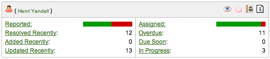

Created by Henri Yandell at SourceLabs, Inc.
Released under the Apache License 2.0 and Copyright 2007 SourceLabs, Inc.
This project uses the excellent famfamfam.com Silk icons.
The portlet provided by the Current User Status plugin can be considered an entry point into the user's profile, and a replacement for the Quick Links and In Progress portlets. It's expected to be of use in every JIRA, bringing many different pieces of data and links into a concise piece of screen real estate.
Version 1.0.2 was released on 30th of June 2007. It adds an icon for assigned open issues as that can often be a small part of the percentage bar.
Version 1.0.1 was released on 19th of April 2007. It fixed a bug whereby the green/red links on the percentage bars were back to front.
Version 1.0 was released on 10th of April 2007.
Install the plugin by downloading the plugin jar, place it in your $JIRA/WEB-INF/lib/ and giving your JIRA a restart.
Once it's installed you can add it to your dashboard by selecting the Current User Status portlet. Please follow the instructions from Atlassian for configuring your personal dashboard or the default dashboard.
The source is available for perusing by downloading the source zip and unpacking.
Please report such things to the project's JIRA, mail these to me at henri-at-sourcelabs.com, or add them as comments to the JIRA plugin page.